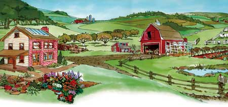

Although many people dream of buying several acres in the country,sometimes it's more practical to start homesteading where youare.
Heidi Hunt, an assistant editor at Mother Earth News whohomesteaded on a farm in northeastern Washington, recommendslearning as many homesteading skills as possible before moving to aplace in the country. 'Planting, harvesting and preserving food areskills that can be practiced almost anywhere,' Hunt says.
In fact, many aspects of homesteading work as well in the city asin the country. Installing solar panels, building with straw bales,heating with wood, collecting rainwater and even raising chickensare all possible in the city or suburbs. Just be careful to checkall relevant zoning and local ordinances before you getstarted.
Whatever your homesteading plans, Hunt says it's important to focuson your priorities. Decide which parts of the dream are mostimportant to you. 'Learn the skills and find out what's involved.Each new homesteading activity requires new tools and skills, aswell as a certain amount of money and energy,' she says.
Some of these activities require more money and time than others ?another reason why it's a good idea to start with smaller projects,such as learning to garden before buying farmland, or doing somebasic home repairs before deciding to build your own home.
If you pursue larger projects, there are many ways to learn moreabout your interests. For potential farmers, apprenticeships andvolunteer opportunities on organic farms can be invaluable.Renewable energy workshops around the country help people learnabout small-scale solar or wind power. To learn about building,options range from volunteering with Habitat for Humanity toattending natural building workshops. For a list of homesteadingresources, seePlan the Perfect Homestead in the April/May 2006 issue ofMother Earth News.
|
 |
|
|